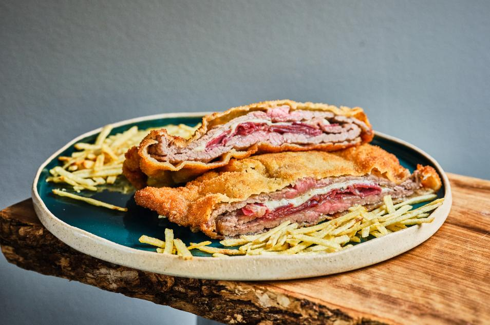

Cachopo

Descripcion
Un cachopo es un plato típico de la cocina asturiana el cual está elaborado
de dos filetes grandes de ternera entre los cuales se rellena de jamón y queso.
Se come frito y caliente, previamente rebozado en harina, huevo y pan rallado.
Ingredientes
- 2 filetes de ternera Asturiana
- 3 lonchas de jamon serrano
- 200gr queso de su eleccion. Recomendamos queso fundente y de la tierrina
- 2 huevos
- Harina
- Pan rallado
- Sal
- Pimienta
Pasos
- Espalmar y salpimetar los filetes.
- Sobre el primer filete, rellenar con el jamon y el queso.
- Tapar con el segundo filete y cerrar los bordes.
- Enharinar, pasar por huevo y finalmente por pan rallado.
- Freir el cachopo.
- Servir en una fuente y de manera opcional junto a guarnicion de patatas fritas y pimientos.
- Por ultimo, DISFRUTAR.